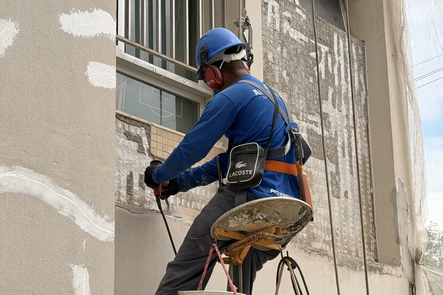

Reforma e recuperação de fachadas
Tratamento de fissuras e trincas, troca de rejuntes, impermeabilização e recomposição de revestimentos cerâmicos, pastilhas e granito.
- Diagnóstico completo da fachada
- Tratamento de fissuras e infiltrações
- Recomposição de revestimentos